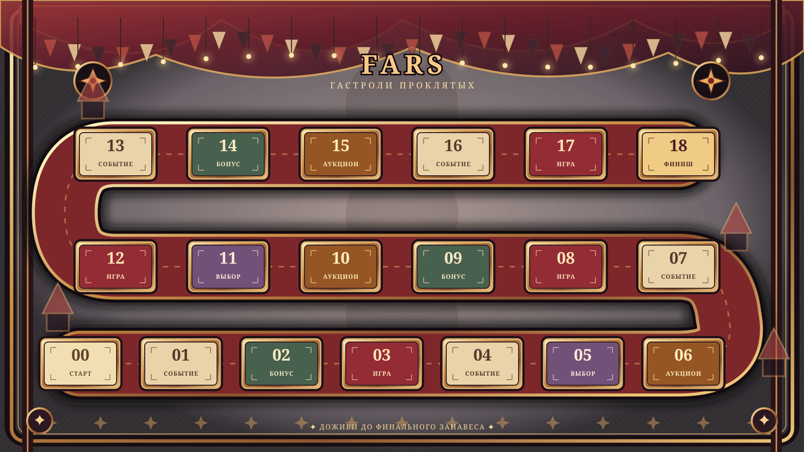

✦FARS ЦИРКОВЫЕ ГАСТРОЛИ
ОТКРЫТАЯ АФИША ПРЕДСТАВЛЕНИЯ
Гастроли проклятых
Публичный просмотр · без управления игрой

ХОД ПРЕДСТАВЛЕНИЯ
00 из 18
Ожидание броска
Манеж ждёт.
Этот экран только для просмотра. Броски и прохождение игр подтверждает стример в личном кабинете.
Подключаем представление…